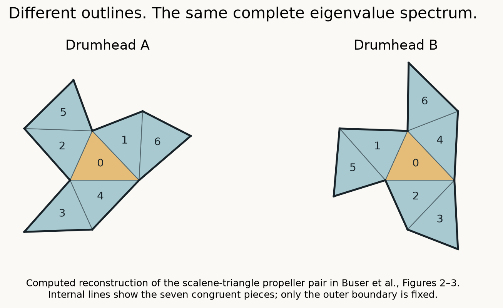
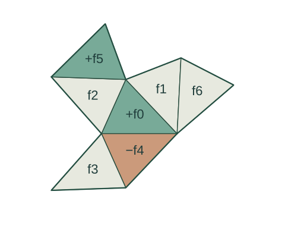
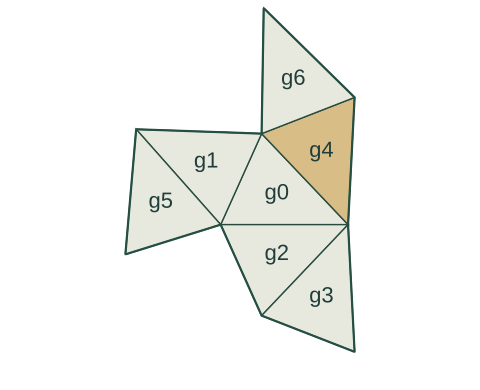

THE STATIC EDITION · NO MOTION REQUIRED
Can You Hear the Shape of a Drum?
Go to the step-by-step mathematical walkthrough ↓
A shape has a sound. Does that sound have only one shape?
Imagine a drum behind a curtain. A perfect instrument gives you every natural frequency of its drumhead, including repetitions. Could you draw its outline?
Real recordings depend on the material, the strike and the room. Our question concerns an ideal, uniform, flat membrane with its edge fixed and its physical properties known. “Hearing” means having the complete frequency list. That is much more information than recognizing a note.
First, a shape gives us a spectrum
The forward problem starts with a known drumhead. For its interior Ω, solve −Δφ = λφ with φ = 0 along the outer edge. The eigenfunction φ is a spatial mode; λ is its eigenvalue. The infinite list of eigenvalues, counting repetitions, is the spectrum. With known wave speed c, the natural frequency is f = c√λ/(2π).
Draw a polygon and compute six low modes → The interactive solver accepts simple convex or concave polygons with 3–16 vertices and no holes. It builds a conforming triangular mesh and uses piecewise linear finite elements with a row-sum lumped mass matrix. It computes approximate eigenpairs of K v = λ M v locally in the browser. Refining the mesh helps assess numerical changes; a small matrix residual alone does not measure the continuum error.
A useful benchmark is the 2 × 1 rectangle. Its exact lowest eigenvalue is λ₁ = π²(1/2² + 1/1²) ≈ 12.337. The refined example in the solver should approach this value. On a square, the second and third modes have the same exact eigenvalue: a repeated number can correspond to independent spatial patterns. The plotted basis within a repeated eigenspace is not unique.
Only six low estimates are displayed. They are not the complete spectrum, and matching them would not prove isospectrality. The next question reverses this direction: if the complete ideal spectrum were known, would it identify one outline?
One drum, many ways to move
The fixed edge cannot move, and neighboring points pull on one another. Only special patterns can oscillate while keeping their spatial shape. These are natural modes, each with its own frequency.
A vibrating string offers a starting point. Some standing-wave patterns have stationary points between the ends. Across a drumhead, stationary curves are called nodal lines. The regions between them can move in opposite directions.

Figure 1. Signs show opposite displacements in a snapshot; they reverse during motion. The dashed nodal lines and the outer edge stay still. A real strike usually excites several modes together.
Hear the modes in the interactive edition. Each moving single mode has a synthesized pure tone with a mute switch and volume control. One common scale sets the original 2 × 1 rectangle’s lowest mode to 220 Hz; all other pitches follow the square root of the eigenvalue ratio to that reference. The animation runs much slower than the sound, by one common factor. These are illustrative pitches, not measured frequencies or recordings of real drums. Different basis modes at the same eigenvalue sound the same in this single-tone demonstration.
Twice the size: what changes?
Double both side lengths, keeping the tension and surface density unchanged. Do the natural frequencies double, halve, or stay the same?
They halve. The same pattern is spread over twice the distance, while the wave speed stays fixed: its oscillation takes twice as long. The formula below makes the scaling precise.
Check the rectangular formula
For side lengths a and b, wave speed c, and positive integers m,n:
fmn = (c/2)√(m²/a² + n²/b²)
Replacing both a and b by twice their values divides the quantity under the square root by four, hence every fmn by two. Scaling only one side would not have this uniform effect.
With the physical conditions fixed, each frequency corresponds to an eigenvalue, proportional to frequency squared. The complete eigenvalue list, including repetitions, is the spectrum.
Geometry affects vibration. Could we follow that relationship backward, from frequencies to shape?
You can hear the area
The frequency list contains geometric clues. At high frequencies, the rate at which modes accumulate reveals the area. For smooth boundaries and ordinary polygons, the complete spectrum also determines the perimeter. [1]
The field studying these relationships between geometry and eigenvalues is spectral geometry. Its inverse question now looks promising: if the list reveals area and perimeter, might it reveal the whole outline?
See how counting modes estimates area
A 4 × 1 rectangle and a 2 × 2 square both have area 4. For the positive Laplacian −Δ, count the eigenvalues up to Λ, including multiplicities. Weyl’s law gives the estimate A ≈ 4πN(Λ)/Λ.
| Cutoff Λ | 4 × 1: modes | Area estimate | 2 × 2: modes | Area estimate |
|---|---|---|---|---|
| 80 | 18 | 2.83 | 20 | 3.14 |
| 800 | 228 | 3.58 | 234 | 3.68 |
| 8,000 | 2,481 | 3.90 | 2,490 | 3.91 |
The estimates approach 4 as Λ grows without bound. Finite estimates fluctuate and include boundary effects; improvement need not be monotonic. Agreement on area does not mean agreement of the spectra. These rectangles are not an isospectral pair.
Different shapes, the same entire spectrum
Mark Kac popularized the drum question in his 1966 essay. In 1992, Carolyn Gordon, David Webb and Scott Wolpert published planar counterexamples: different shapes with identical complete eigenvalue spectra. The answer was “not always.” [2]

Explore why A and B cannot coincide → Move, rotate and flip one outline over the other, then follow a three-corner argument. 中文演示
Figure 2. A reconstructed pair from Buser and colleagues’ later account. Internal lines mark the construction; only the outer boundary is fixed. [3]
Isospectral means all eigenvalues agree, including their multiplicities. Non-isometric means no translation, rotation or reflection makes the planar domains coincide. Agreement is exact throughout an infinite list; a few similar low frequencies would not establish it.
How can every frequency agree?
The proof relates whole families of modes. Divide any eigenfunction on drum A into seven function pieces. Reflect and align selected pieces on drum B, then add or subtract their values. This construction is called transplantation. [3]


For this target triangle: g₄ = f₀ + f₅ − f₄, after the three pieces have been geometrically aligned. Each symbol represents a whole function, not a number. Colors identify terms, not vibration heights.
Reflection preserves the Laplacian, and its linearity preserves the eigenvalue when such pieces are combined. The specific rules also make the functions match across seams and vanish at the outer edge. An invertible correspondence works for each eigenspace, preserving multiplicity. That establishes the complete spectral match. [3]
Inspect all seven rules
Each source function is first aligned with its target triangle. The signs refer to functions, not physical pieces cut from a drum.
| Target | Aligned source functions |
|---|---|
| g₀ | f₁ + f₂ + f₄ |
| g₁ | f₀ − f₁ + f₃ |
| g₂ | f₀ − f₂ + f₆ |
| g₃ | f₁ − f₅ − f₆ |
| g₄ | f₀ − f₄ + f₅ |
| g₅ | −f₃ + f₄ − f₆ |
| g₆ | f₂ − f₃ − f₅ |
Arbitrary triangle rearrangements do not satisfy these conditions. This diagram guides you through the published construction; it is not itself a proof based on a simulated mode. See Buser et al., §2 and Figure 3.
What survives behind the curtain?
You can recover some geometry while still missing the unique outline. The obstacle is not merely an imperfect ear or a short recording: even the complete spectrum can leave ambiguity.
Extra information can change the answer. Within the class of triangular drumheads, the complete spectrum determines the triangle up to congruence. [4] “Not always” leaves room for powerful positive results.
Equal spectra also do not make arbitrary recordings identical. A recording depends on which modes are excited, their amplitudes and how the vibration is measured. Our conclusion concerns an ideal planar membrane and specified spectral information.
A shape determines a spectrum. A spectrum can reveal area and perimeter. Yet it need not name one shape. Which other geometric features can we recover?
The mathematics behind the motion
A mode shape φ satisfies −Δφ = λφ, with φ = 0 on the boundary. Here Δφ = ∂²φ/∂x² + ∂²φ/∂y² describes local spatial curvature. Substituting u = φ cos(2πft) into the wave equation utt = c²Δu gives f = c√λ/(2π). With fixed wave speed c, the eigenvalues and natural frequencies determine each other. [5]
For a rectangle, φmn = sin(mπx/a)sin(nπy/b) and λmn = π²(m²/a² + n²/b²). Counting multiplicities matters: on a square, (1,2) and (2,1) are independent modes with the same eigenvalue.
In our −Δ convention, Weyl’s law is N(Λ)/Λ → A/(4π). For smooth bounded planar domains, the heat trace begins Σe−tλ = A/(4πt) − L/(8√(πt)) + O(1) as t → 0. Polygons share these first two terms; corners contribute at the constant term. Thus the complete spectrum determines area A and perimeter L. Kac uses a different operator normalization, which changes the constants in his formulas. [1]
The mathematical walkthrough
The essential equations and derivations follow the same sequence as the interactive essay. Expand a derivation for its intermediate steps.
THE MATHEMATICS / DRAW → COMPUTE → LISTEN
You are changing the domain of an eigenvalue problem.
Dragging a corner changes Ω and the boundary constraint. The same differential expression can therefore allow different modes.
Each Nᵢ is a piecewise linear basis function. The vector v stores heights at mesh nodes; it is not a list of frequencies. Hats mark numerical eigenvalue estimates.
The polygon experiment selects an approximate eigenpair; this reading version shows the governing matrix equation.
Mathematical tools: partial derivatives · boundary conditions · linear algebra · finite elements
Follow the derivation: local curvature → energy → matrices
What does the Laplacian measure?
Freeze time and view displacement as a height map U(x,y). A first derivative measures slope; a second derivative measures how that slope changes. The two spatial contributions add.
The four-neighbor formula explains the local comparison on an equally spaced Cartesian grid. The solver here instead uses triangular finite elements. For U=x²+y², ΔU=4; for U=x²−y², ΔU=0 despite curvature in both directions. Zero Laplacian at a point does not mean a flat surface.
Why are the Dirichlet eigenvalues positive?
Multiply the eigenvalue equation by φ, integrate, and use integration by parts. The boundary term vanishes because φ=0 on the fixed edge.
This is the Rayleigh quotient for an eigenfunction. The denominator is positive. A zero numerator would make φ constant on this connected domain; the boundary then forces the excluded zero function. It also explains why multiplying a mode by any nonzero amplitude does not change λ.
Why does a matrix eigenvalue problem appear?
Test the differential equation against a function w that also vanishes on the boundary. Integration by parts lowers the derivative order. Substitute φ_h=ΣvⱼNⱼ and take w=Nᵢ.
The program uses a row-sum lumped mass matrix: each triangle of area A contributes A/3 to each vertex. Boundary nodal values are fixed to zero and eliminated. Refining the mesh changes the approximation space; a small matrix residual alone is not a bound on the continuum error.
Derivation and further reading: Laplacian eigenvalues · P1 mass lumping.
THE MATHEMATICS / CHOOSE A MODE → PLAY → HEAR
A spatial pattern and a time oscillator.
φ fixes the relative heights of all points. The wave equation relates their acceleration to spatial curvature; acceleration is not velocity.
The time equation has angular frequency ω=c√λ. One cycle is 2π radians, so the frequency heard is f=ω/(2π).
Mathematical tools: separation of variables · second derivatives · trigonometry · ordinary differential equations
Derive the patterns and their frequencies, step by step
Start with two masses: why eigenvectors?
For two equal masses joined by three equal springs with fixed ends, q″=−αK_toy q, where α is spring stiffness divided by mass. A motion q(t)=a(t)v preserves one spatial pattern only if K_toy v=μv.
In either pattern, the acceleration remains along the same vector direction. The time equation becomes a″+αμa=0, giving a frequency ratio √3, rather than 3. On a continuous membrane, the vector becomes a function and the matrix becomes a differential operator.
Separate space from time.
Uniform tension 𝒯 and surface mass density ρ give c²=𝒯/ρ in the small-amplitude model. For a nonzero single mode, try u=φa. Time derivatives act on a; spatial derivatives act on φ. Substitution gives the first identity below. Away from zeros, separation makes the two sides of the second identity constant; the final equations avoid division at nodes.
Thus −Δφ=λφ and a″+c²λa=0. A nonzero motion also requires φ=0 on the fixed boundary.
Let the fixed ends select the spatial wavelengths.
On 0<x<a, X(x)=A sin(kx)+B cos(kx). The condition X(0)=0 gives B=0. Then X(a)=0 forces ka=mπ, with m a positive integer. Apply the same argument in y.
Differentiate twice to identify the eigenvalue.
Each derivative in x supplies a factor mπ/a; the second supplies a minus sign. The y derivative works the same way. Add the two contributions and compare with −Δφ=λφ.
Convert restoring strength into frequency.
Verify a(t)=cos(ωt): differentiating twice gives a″=−ω²a. Comparing the time equations produces the square root. Angular frequency and Hz differ by 2π.
Here the sound uses one common illustrative calibration, 220√(λ/(1.25π²)) Hz. Volume scales amplitude, not λ. The animation uses the same ratios with a much slower clock.
Read permanent nodes from the spatial factor.
Interior nodal lines satisfy φ=0 for the entire motion: x=ka/m or y=ℓb/n, with k=1,…,m−1 and ℓ=1,…,n−1. When the time factor is momentarily zero, every point crosses the resting plane; that instant does not make every point a node.
WHY TWO DIFFERENT PATTERNS CAN SHARE A NOTE
The spectrum counts independent directions.
On a square of side L, the (1,2) and (2,1) patterns both have λ=5π²/L². They are independent, so this value appears twice in the spectrum. Any nonzero combination αφ₁₂+βφ₂₁ has that same eigenvalue. Its nodal lines can look different without creating a new frequency. The computed square modes provide one possible basis.
Mathematical tools: eigenspaces · linear independence · linear combinations · multiplicity
THE MATHEMATICS / CHANGE THE SIZE
Two spatial derivatives mean two scale factors.
One derivative contributes 1/s by the chain rule; the second contributes another. The mapped function still vanishes on the scaled boundary. At fixed wave speed, frequency takes the square root of the eigenvalue scale.
Mathematical tools: multivariable chain rule · boundary mapping · square roots
THE MATHEMATICS / INCREASE THE CUTOFF
Count modes, then take a limit.
Λ is the cutoff you choose. N counts independent modes; two independent modes at one eigenvalue count twice.
Weyl’s law concerns the growth rate at large cutoffs. The finite number displayed by the experiment is an estimate, not an exact area formula.
Mathematical tools: integer lattice points · asymptotic growth · limits
Why the constant 4π appears: count a quarter ellipse
Turn the rectangular spectrum into a counting problem.
Every positive integer pair (m,n) labels a mode. Keeping eigenvalues up to Λ is equivalent to keeping lattice points inside a quarter ellipse in the mode-index plane, not on the physical drumhead.
Compare the number of points with the ellipse area.
The semiaxes are a√Λ/π and b√Λ/π. The quarter-ellipse area grows like Λ; boundary counting error for a fixed rectangle grows at most like √Λ. Divide by Λ and the relative boundary contribution vanishes.
This gives a derivation for rectangles. Weyl’s theorem extends the leading law to the bounded smooth domains and ordinary polygons considered here. Local fluctuations remain possible at finite cutoffs.
Kac [1]. These two equal-area rectangles are not isospectral.
ONE MORE SPECTRAL INVARIANT / PERIMETER
The boundary leaves the next term.
The complete spectrum determines Z. Its leading coefficient gives area A; the next gives perimeter L. Here τ is the heat parameter with length² units, not the vibrating membrane’s time in seconds. Smooth boundaries and ordinary polygons share these first two terms; corners contribute at constant order.
Derive the boundary term and recover its coefficient
Let the same spatial mode diffuse instead of oscillate.
For the heat equation vτ=Δv, a spatial eigenfunction decays as e^(−τλ)φ. Summing these modal decay weights defines the heat trace. It depends only on the eigenvalues, rather than on one chosen initial temperature distribution.
Read the area term and the boundary correction.
The plane’s heat-kernel diagonal is 1/(4πτ), giving A/(4πτ) over the interior. Near a straight zero-temperature boundary, an opposite mirror source removes e^(−d²/τ)/(4πτ) at distance d from the edge. Integrating this loss perpendicular to each unit of boundary gives:
This is an exact half-plane calculation and a local explanation of the general coefficient; controlling a curved boundary and the remainder requires heat-kernel analysis.
Extract the coefficients using only the full spectrum.
First isolate area with a limit. Then subtract the area term before reading the next coefficient.
Six low eigenvalues cannot determine these small-τ limits. The heat expansion also does not, by itself, establish a universal two-term counting-function formula. All constants here use the positive operator −Δ.
Kac [1] with our −Δ normalization.
THE MATHEMATICS / COMPARE THE TWO SHAPES
The forward map is not one-to-one.
Two genuinely different domains have the same image under the spectral map. This disproves general uniqueness.
Equal area or identical construction pieces do not establish equal spectra. Geometric non-congruence and spectral equality need separate arguments.
Mathematical tools: maps and injectivity · necessary conditions · counterexamples
THE MATHEMATICS / SELECT A TRANSPLANTATION RULE
Move functions, then use linearity.
The inputs are whole function pieces, each geometrically aligned to the target triangle. The signs tell you how to combine their values. A valid transplantation must preserve the equation inside, the seams between pieces and the zero outer boundary.
Mathematical tools: isometries · linear operators · odd reflection · eigenspace dimension
Each τ maps the target triangle isometrically to the indicated source triangle. All source pieces have the same λ.
Work through a seam, a boundary and the multiplicity argument
Keep the local equation under reflection and addition.
For an isometry τ, the chain rule and orthogonality give Δ(f∘τ)=(Δf)∘τ. Combining pieces of the same eigenvalue therefore preserves that eigenvalue locally. Combining arbitrary different eigenvalues would not work.
Check one internal seam: g₀ continues into g₄.
Across edge class a, the source extension rules send f₁→f₀, f₂→f₅ and f₄→−f₄. Consequently the rule in target triangle 0 extends into exactly the rule in adjacent target triangle 4.
This is a common local continuation, so values and derivatives in one common normal direction agree across the seam. Merely matching heights would not be enough: |x| is continuous but has a derivative jump at zero.
Check an outer edge using odd reflection.
Across the c-class outer edge of target triangle 4, the source rules send f₀→f₄, f₄→f₀ and f₅→−f₅. The entire target combination becomes its own negative.
The internal triangle lines are not extra fixed boundaries. The cancellation is required only at the actual outer edge.
Account for all modes, including repeated eigenvalues.
The seven rules form an integer coefficient matrix T on function pieces. Its determinant is 24, so a nonzero input cannot disappear. The signed edge-continuation matrices also satisfy the identities below for each edge class e.
Invertibility together with these continuation identities supplies the reverse correspondence. The resulting map is an isomorphism of eigenspaces for every λ, hence dimensions and multiplicities agree. The determinant alone would not check seams or boundary conditions. The edge matrices are not the membrane’s Laplacian.
Buser et al., §2 and Figure 3. The matrices and signs are checked against this page’s numbered construction.
THE MATHEMATICS / WHAT THE SOUND LEAVES OUT
A spectrum is one part of a motion.
The domain determines the allowed eigenvalues and eigenspaces. Initial displacement and velocity determine coefficients aⱼ,bⱼ. A measurement also depends on where and how you observe the motion. The website isolates one mode and one pure tone to make the frequency relation clear.
Mathematical tools: eigenfunction expansion · initial conditions · linear superposition
Sources & notes
- Mark Kac, Can One Hear the Shape of a Drum? American Mathematical Monthly 73(4), Part 2 (1966), 1–23.
- Gordon, Webb & Wolpert, One cannot hear the shape of a drum (1992).
- Buser, Conway, Doyle & Semmler, Some planar isospectral domains, 1994 version, §2 and Figures 2–3.
- Grieser & Maronna, Hearing the Shape of a Triangle, 2013 version.
- Georgia Tech notes, Separation of Variables for Higher Dimensional Wave Equation.
Explore the interactive edition →
A project by John Huang. Created with Codex assistance. Rectangular modes and counts use explicit formulas. Counterexample and transplantation illustrations reconstruct the cited published construction; the paper provides the exact proof. No visitor responses are collected or stored.